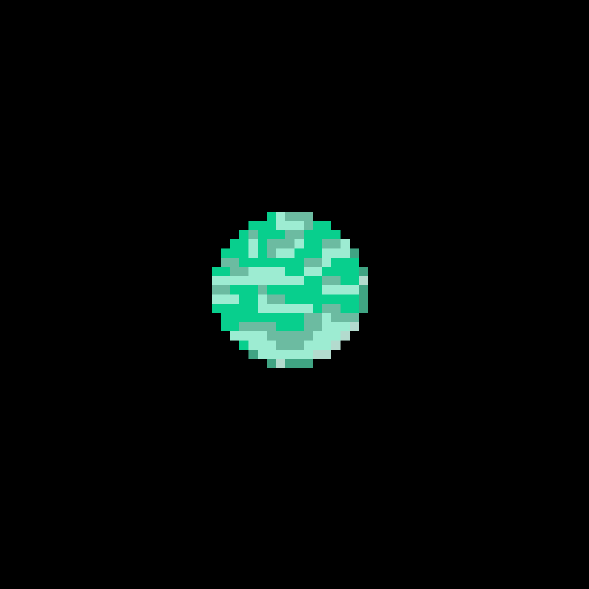

Kepler-22 b är en jordlik planet eftersom den är mest gjord av sten. Planeten är nio gånger så stor som jorden och tar cirka 290 dagar att kretsa runt sin stjärna.
Forskare har spekulerat att det kan finnas ett stort hav på planeten. Kepler-22 b ligger faktiskt i den zon där vattnet kan hålla sig flytande, vilket gör att det finns en möjlighet för den att ha liv.
